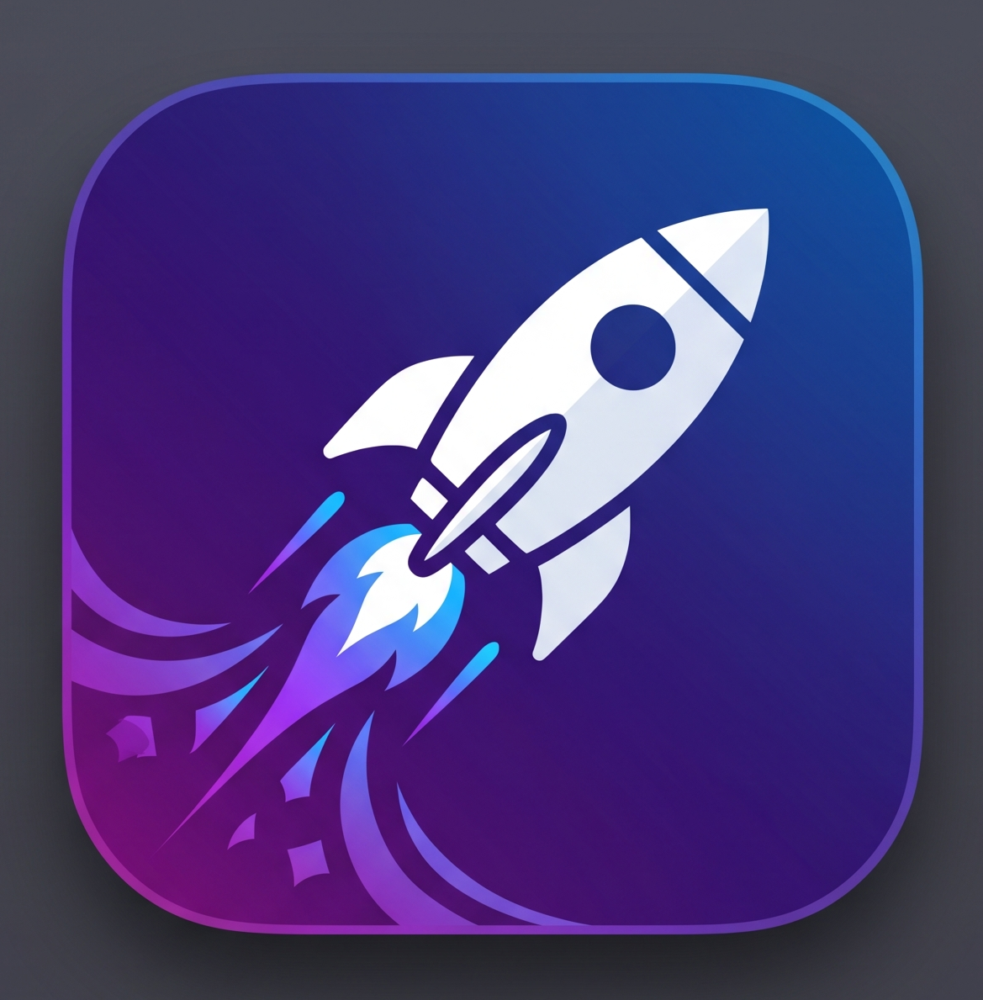

Statistik klik tombol unduhan Anda secara komprehensif. Data direkam menggunakan Local Storage (tersimpan statis di browser).
Klik secara keseluruhan
Merupakan mayoritas pengunjung
Menghapus rekaman simulasi yang ada di browser ini.